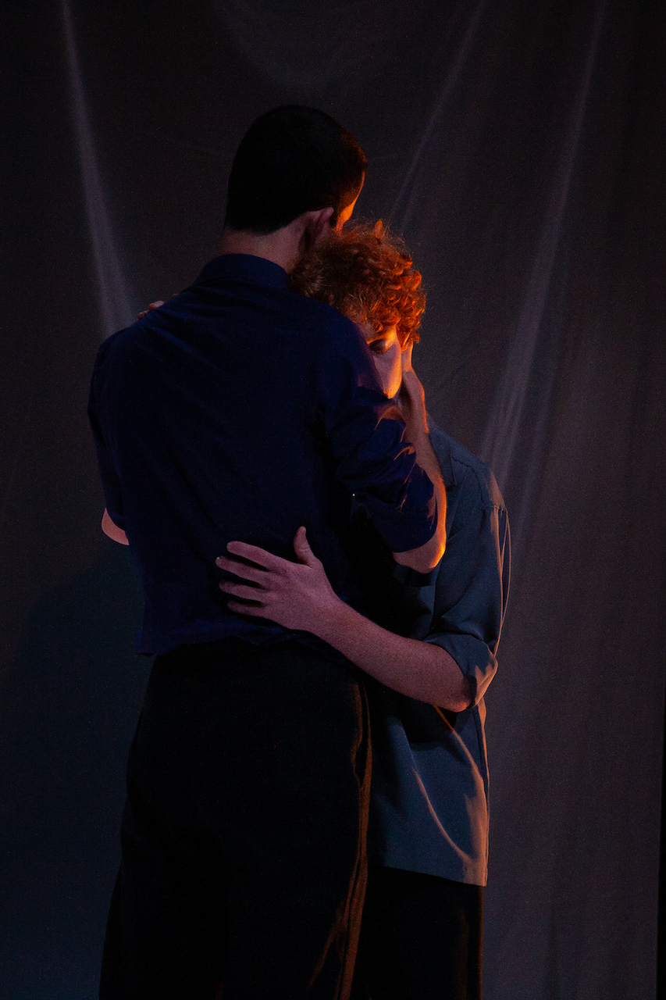
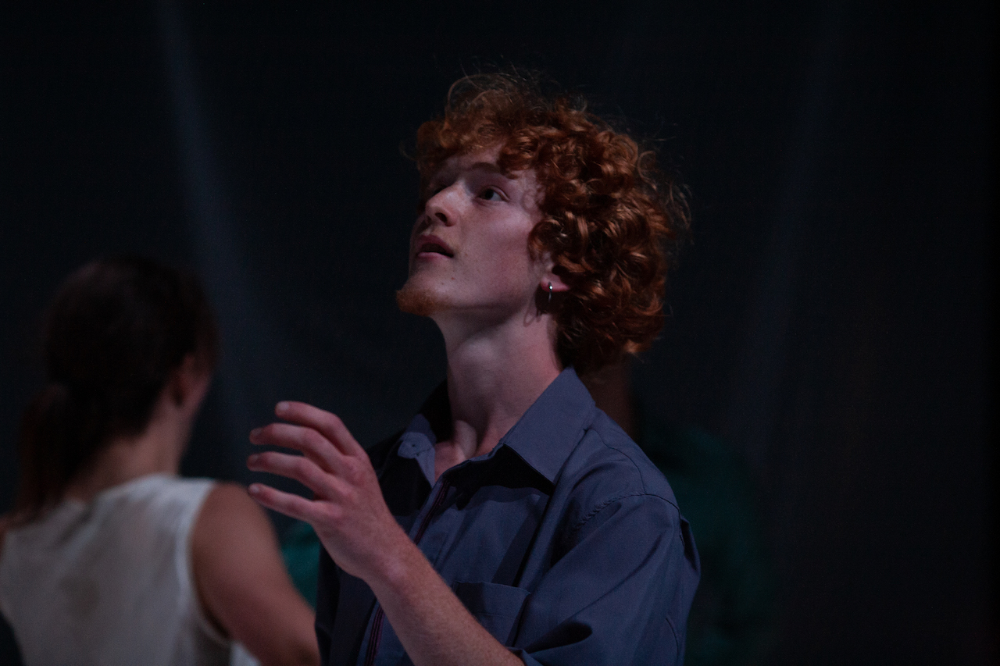
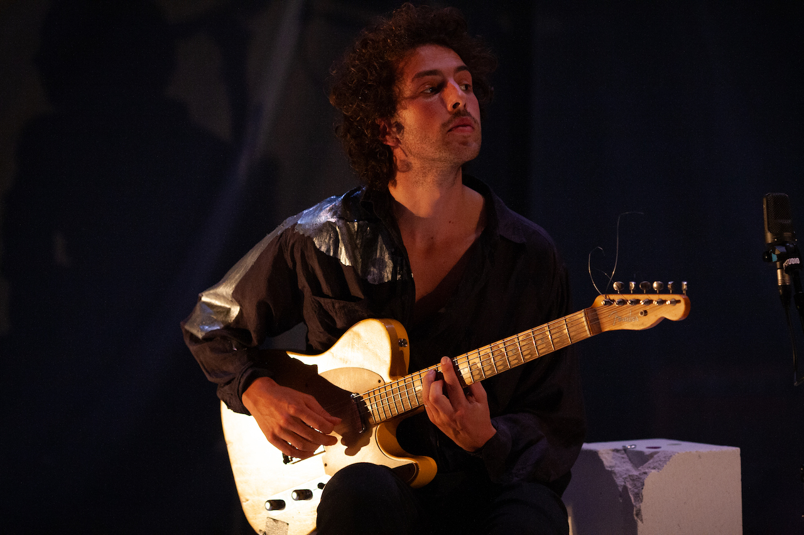
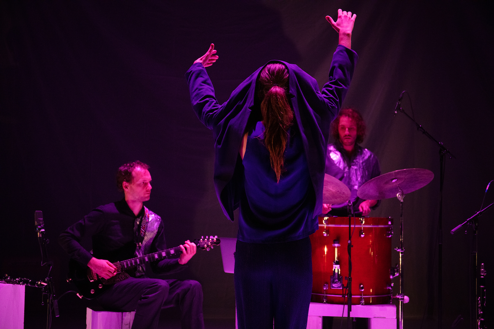
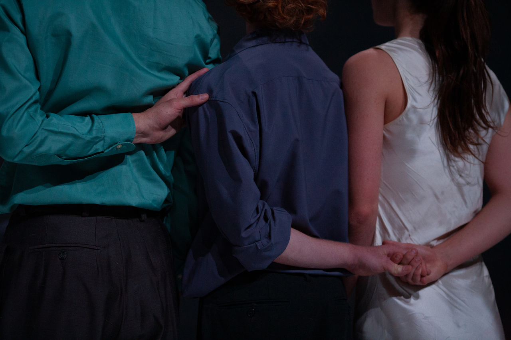

Untitled 1 (An Attempt to Create Meaning in a Space that could go Completely Dark)
Wat met verdriet dat niet kan vloeien, verdriet dat wacht op ontploffing? Vijf dansers en vijf muzikanten gaan in dialoog in een poging ruimte te creëren voor verdriet, elkaar daarin te vinden en weer te verliezen.
Abel Ghekiere raakte kwijt en vond – een schelle klarinet, een krassende cello, ver gitaargefluister, als kerven van verlies. In het naar buiten brengen en het opleggen aan anderen, resoneren de klanken van zijn pijn in een wereld waarin het verlorene zelf niet teruggevonden kan worden.
Astrid De Haes voelde de noten binnenkomen en keert het hartenleed binnenstebuiten. Vijf dansers brengen de waanzin tot de rand van de troost. In de knoop met het verlies en het tot uitbarsting komen wordt het verdriet fysiek. In het wegglippen houden ze de betekenis vast, in de disharmonie en het ongemak zoeken ze samenspel.
An attempt to create meaning in a space that could go completely dark is een poging om te dansen met de verstikking en troost van verdriet. Een poging ook, om voor de eerste maal deze jonge makers samen te brengen, in een samenspel van muziek, dans, kostuum en scenografie. Lichamen worden een knoop emoties, instrumenten en dansers converseren samen in valse noten.
Zo wil deze voorstelling van het podium tussen de stoelen glijden, in de mensen kruipen en daar in hun eigen emoties weerkaatsen. De individuele ervaring staat voorop, maar is onvermijdelijk gedeeld. Er zijn geen opgelegde emoties, verhalen, associaties. De zoektocht van de muziek wordt de zoektocht van de voorstelling: ‘Voel wat u wil voelen. Ik leg enkel ongemak op.’
Regie en productie
Astrid De Haes
Ontwerp muziek
Abel Ghekiere
Kostuum
Eli Verkeyn
Scenografie & lichtdesign
Dauwke Fredrix
Sinan Poffyn
Dramaturgie
Jenne Van Daele
Dans
Margot Masquelier
Olivia Van De Peer
Ebe Meynckens
Aron Wouters
Zoë Demoustier
Melody Van Gompel
Muziek
Abel Ghekiere
Maarten Joosten
Tobias Volckaert
Ana Van Liedekerke
Orlan Ghekiere
Zakelijk leider
Sophie Tiersma
Artistiek advies
David Weber-Krebs
Alain Platel
Fotografie
Nora Dekoning
Met de steun van
Fameus
Stad Antwerpen
Sabam for Culture
WALPURGIS|deFENIKS
Destelheide
Coproductie
Joris Ghekiere Estate